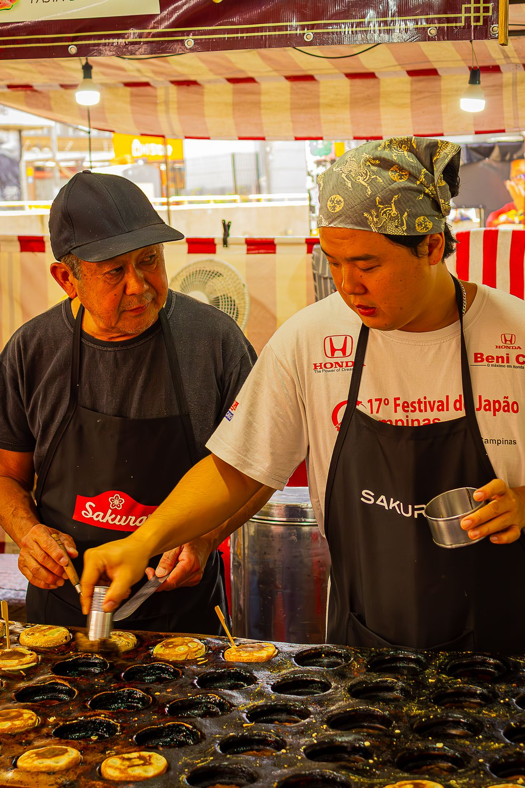
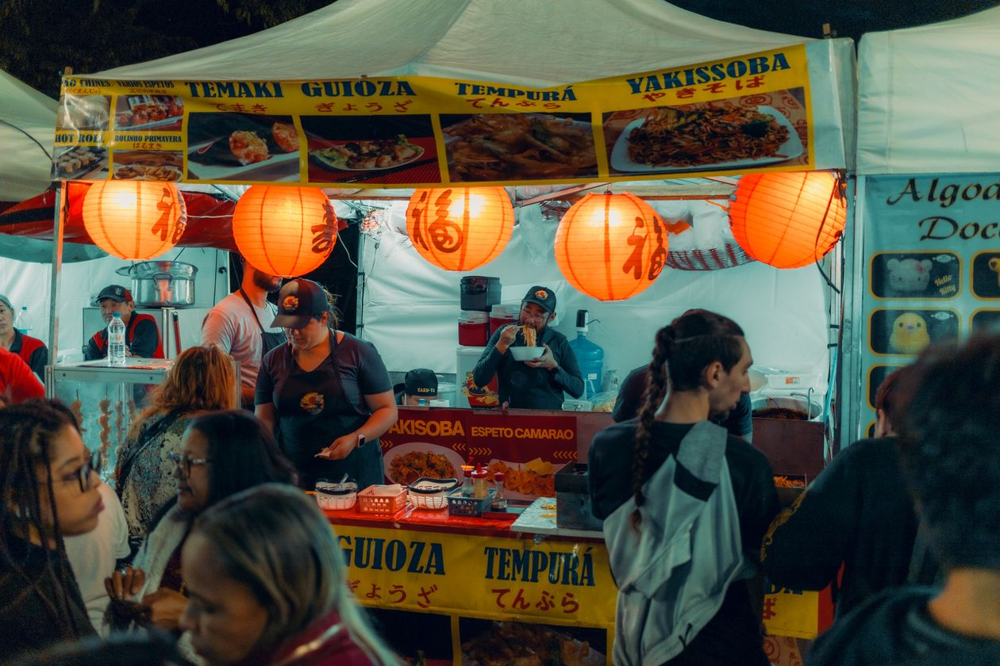
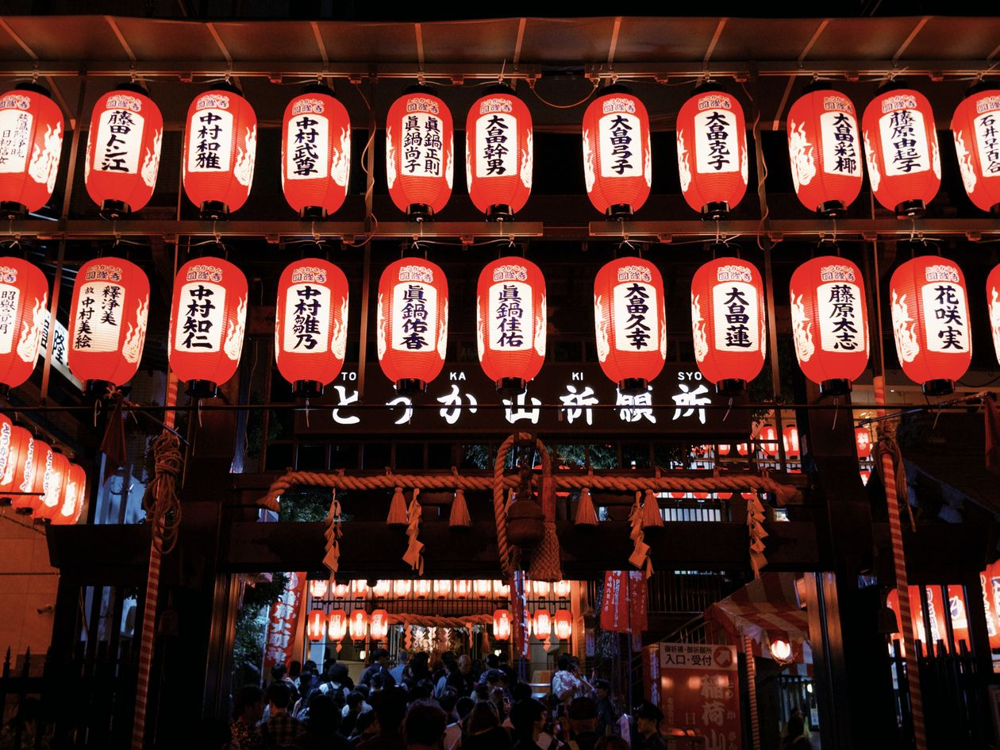

Every pitch leaves a record: what was asked, what I cooked, what the night actually did. The rainy one is here too — a stall keeper who hides his losses will hide other things.
Hakata Gion Yamakasa · 博多祇園山笠 · July 2025
The home festival — nine nights by the floats

Asked: the Nakasu street association wanted a food stall on the side street that would hold its quality for the whole Yamakasa — nine nights, not just the famous last one — and still be serving when the yoiyama crowds came off the floats.
Did: takoyaki-led menu, batter mixed in two sittings a night so none of it stood longer than three hours, and my nephew on the corn grill for the final three nights. I wrote each night's sell-out time on the board in chalk, where everyone could see it.
Outcome: 1,940 portions across nine nights. Takoyaki sold out at 21:40 on the last night; 31 portions wasted all week, which for festival food is a number I will sign my name under. The pitch was renewed for 2026 before the association's August meeting.
Portions sold
1,940
Nights
9
Last sell-out
21:40
Wasted
31
"Kenji's board said 'sold out' at half past nine and he still stayed to hand out water to the float crews. That is why his pitch is renewed before the association even meets."
Hakata Dontaku · 博多どんたく · May 2025
The rainy one — a loss, itemised

Asked: a two-day pitch near Hakata Station for Dontaku, the May festival that draws two million visitors. The organisers wanted speed above all — this crowd is walking somewhere.
Did: yakisoba-led menu for pace, prep for 600 buyers across the two days. Day one went to plan: 212 buyers, no queue longer than six minutes. Then the rain arrived at 14:00 on day two and stayed.
Outcome, honestly: 388 buyers served of the 600 prepped for. The corn kept — corn in the husk does not care about a wet Tuesday — but 90 packs of noodles and a full sitting of batter went unsold: ¥61,000 of prep into the bin, and the pitch fee on top. What the rain bought me was a rule I now print for every stall keeper who asks: mix half the batter at noon, not all of it at dawn, and the weather can only take half your day. Dontaku 2026 was my best May ever, on the same pitch, under that rule.
Buyers served
388 / 600
Rain from
14:00, day 2
Prep lost
¥61,000
Rule gained
Half at noon
Hōjōya · 放生会 · Hakozaki Shrine · September 2025
Eight nights of families — corn leads

Asked: the shrine festival office wanted food on the approach that families could eat walking — nothing that needs two hands and a table — for the full eight nights of Hōjōya.
Did: put the corn grill at the front of the stall where children could watch it char, takoyaki behind, and cut the yakisoba tray to a walking size. Lit the lanterns at 18:00 sharp every night; the approach fills by half past.
Outcome: 2,610 portions over eight nights. Corn sold out on six of the eight nights — I now prep corn at 3 in 10 buyers for family festivals, not 2 in 10, and the planner on the front page will tell you the same story in numbers. Invited back for 2026 with the same pitch.
Portions sold
2,610
Nights
8
Corn sold out
6 of 8
Rebooked
Yes, 2026
"The only stall on the approach that never once let its lanterns go dark before the shrine closed. Families plan their walk around his corn."
Private hire · 貸切 · August 2025
A company summer party, 300 staff
Asked: a Fukuoka software company wanted its summer party (a natsu matsuri for staff and their children) to feel like a festival, not a buffet — one real stall, real lanterns, food cooked in front of people.
Did: the full cart on their office terrace, three hours, takoyaki and corn (children first in the menu planning, yakisoba for the second hour). Levelled, plugged in and smelling of dashi a full hour before the first guest, because a stall that arrives after the lanterns are lit has already told you how its night will go.
Outcome: 342 portions in three hours — comfortably inside the one-stall serving cap, which is exactly why the booking conversation starts with the numbers on the front page. Booked again for the following summer before the invoice was paid.
Portions
342
Hours
3
Guests
~300
Rebooked
Yes
"It stopped being a company party and became a matsuri the moment the lanterns came on. Our staff's children still talk about the corn."